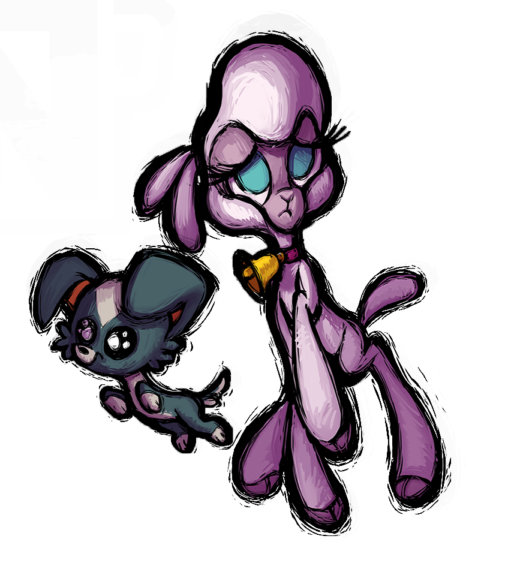
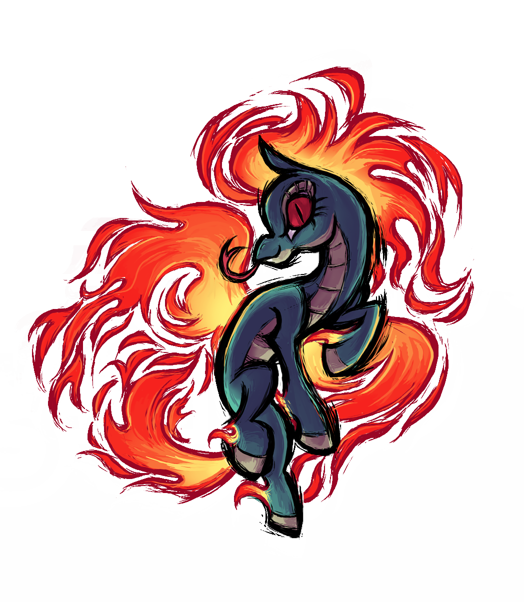

Meet your Champions!
Just as all inhabitants of Fœnum, Cattlekind were immensely concerned when the call for a Key Keeper went out. If the whole world was threatened, that meant their beloved home, The Prairie, was as well! Immediately, one calf came forward to volunteer to be Cattlekind’s proclaimed Key Keeper and protect her homeland and the bovine way of life.
Once the call for the Key Keeper went out to The Tundra, absolutely ALL of the reindeer in the nation entered Rein’s competition to win the honor, for all the Deerfolk of Rein thought highly enough of themselves to take the prize. But it was a young doe named Velvet, who ultimately prevailed. Delicate and lithe, she is by no means the strongest, but she is by far the fastest and most agile of the Ice Sprites’ pets, and she demonstrates a talent for conjuring and controlling snow and ice that no other deer could hold a candle to. Velvet's ice cold magic stops opponents in their tracks. She'll allow you to admire her beautiful sculptures, but only from a distance!
When the call for a Key Keeper finally reached the unreachable ears of the Unicorns deep in the shady forests of The Woodland, it was ignored. The reclusive and reverent Order of the Horn does not participate in violence of any kind. They believe that Light Magic will ultimately prevail, though they did not presume to know how. This was not good enough for one Unicorn — and this surprised no one. Oleander has been long known as the Order of the Horn’s resident rebel.
For decades it was believed that the reclusive Alpake Clan of The High Plains knew nothing about the world beyond the remote Huacaya Mountains. That is until they learned the Alpake had received news of the situation. Suddenly the whole lot of them just showed up in the capitol of High Plains, pushing —no, SHOVING— their champion forward with uncharacteristic fervor and enthusiasm before running away, singing with glee.
Sheepkin, the citizens of the small city-state of The Meadow, are a democratic society, following the will of the masses, the herd, if you will. Problem is, all of the Sheep will vote for the very first suggestion any Sheep happens to make. When they heard the call for a Key Keeper, they immediately held an election to decide if they should decide who to send. Amidst the cowardly silence of the elders, one small voice squeaked out an opinion. "Of course we should!" The Sheep were stunned silent. Someone who speaks their mind? Someone with their own opinion? How dumb! How stupid! She must be... THE BRAVEST OF THEM ALL!
High above the clouds atop the highest of mountains lies the diminutive Empire of Huoshan (known to other Fœnecians as The Volcano), built over the gaping maw of an active, lava-spewing crater. The Empire’s subjects are Longmas, a very proud race who are half horse, half dragon. Every Longma is a member of the military, sworn not only to protect their beloved Empress (Daughter of Heaven, Empress of the Miniscule yet Mighty Realm of Magnanimous Magma, Lava, and Fire) and their honored volcanic home, but all of Fœnum itself.
